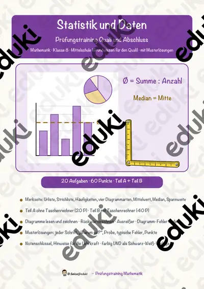
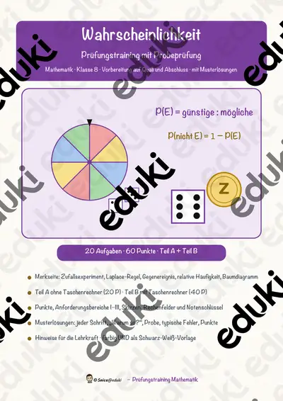

Daten, Diagramme und Wahrscheinlichkeit: Arbeitsblätter für Klasse 3–9 (Mathematik)
Daten erfassen, darstellen und deuten ist ein fester Bereich des Mathematikunterrichts. Die Lernenden arbeiten mit Strichlisten, Diagrammen, Mittelwert und Wahrscheinlichkeit.
Die Begriffsliste dieser Einheit: Strichliste, Diagramm, Mittelwert, Wahrscheinlichkeit, Umfrage und Zufallsexperiment.
In den Lehrplänen der Länder ist das Thema im Fach Mathematik verankert, meist in den Klassen 3 bis 9. Die Schülerinnen und Schüler lesen Diagramme, führen kleine Erhebungen durch und schätzen Chancen ein.
Wer Daten, Diagramme und Wahrscheinlichkeit auf mehrere Stunden verteilt, startet mit Strichliste, übt an Mittelwert und schließt mit Umfrage ab. Alle Blätter sind kopierfertig und enthalten Lösungen für die schnelle Kontrolle. Leistungsstarke und schwächere Lesende erhalten über die Lesespurgeschichten Texte in drei Stufen.
5 passende Materialien stehen bereit, etwa Daten & Diagramme zum Ausmalen, Datendetektive und Statistik und Daten. Vertreten sind 1 Lesespurgeschichte, 2 Prüfungstrainings und 1 Lückentext mit Hörverstehen; die Stufen reichen über Klasse 2–8. Eine Umfrage in der eigenen Klasse liefert Daten, die jeden interessieren, und führt direkt zum Diagramm.
Das gehört zum Thema
Passende Arbeitsblätter und Materialpakete

Datendetektive – Daten sammeln, zählen, darstellen – Lesespurgeschichte mit Rätselaufgaben (Klasse 3)

Statistik und Daten – Prüfungstraining Mathematik (Klasse 8)

Wahrscheinlichkeit – Prüfungstraining Mathematik (Klasse 8)

Mittelwert Lückentext mit Wortspeicher Hörverstehen und Suchsel

Daten & Diagramme zum Ausmalen – Strichlisten, Säulendiagramme Kl. 2–4
Häufige Fragen
Für welche Klassenstufe passen die Arbeitsblätter zu Daten, Diagramme und Wahrscheinlichkeit?
Passend sind Klasse 2–8. Von den 5 Titeln wenden sich die meisten an Klasse 3, einige lassen sich differenzierend auch in benachbarten Stufen nutzen.
Welche Inhalte decken die Materialien zu Daten, Diagramme und Wahrscheinlichkeit ab?
Behandelt werden unter anderem Strichliste, Diagramm, Mittelwert und Wahrscheinlichkeit. Welche Aspekte in Ihrer Klasse Vorrang haben, richtet sich nach dem Lehrplan Ihres Bundeslandes.
Wie setze ich Daten, Diagramme und Wahrscheinlichkeit im Unterricht ein?
Eine Umfrage in der eigenen Klasse liefert Daten, die jeden interessieren, und führt direkt zum Diagramm. Danach genügt meist ein Material als Einstieg und eines zum Üben.
Mehr Material nach Fach und Klasse
- Alle Materialien Mathematik
- Arbeitsblätter Mathematik Klasse 3
- Arbeitsblätter Mathematik Klasse 4
- Arbeitsblätter Mathematik Klasse 5
- Arbeitsblätter Mathematik Klasse 6
- Arbeitsblätter Mathematik Klasse 7
- Arbeitsblätter Mathematik Klasse 8
- Arbeitsblätter Mathematik Klasse 9
- Unterrichtsmaterial Klasse 3
- Unterrichtsmaterial Klasse 4
- Unterrichtsmaterial Klasse 5
- Unterrichtsmaterial Klasse 6
- Unterrichtsmaterial Klasse 7
- Unterrichtsmaterial Klasse 8
- Unterrichtsmaterial Klasse 9
Verwandte Lehrplanthemen
- Das kleine Einmaleins (Mathematik, Klasse 2–4)
- Größen, Einheiten und Uhrzeit (Mathematik, Klasse 2–6)
- Addition und Subtraktion (Mathematik, Klasse 1–4)
- Brüche und Dezimalzahlen (Mathematik, Klasse 5–7)
- Geometrie: Körper, Flächen und Formen (Mathematik, Klasse 1–6)